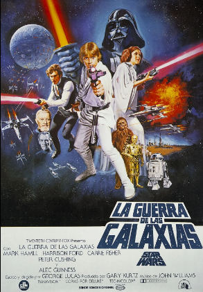
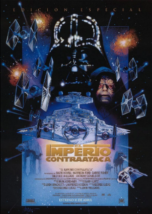
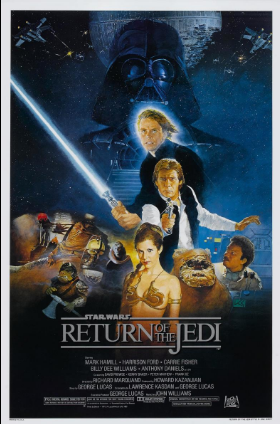
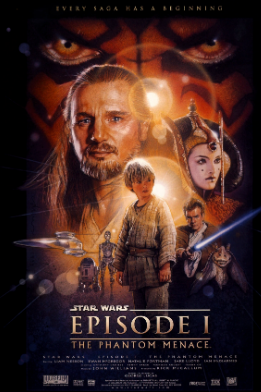
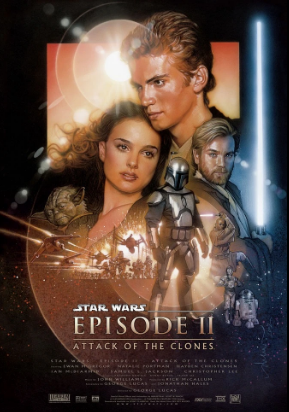
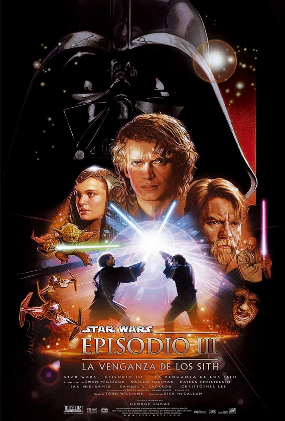

Episodio IV: Una Nueva Esperanza

Estreno (EE.UU.): 25 de mayo de 1977
El joven granjero Luke Skywalker se ve arrastrado a un conflicto galáctico cuando intercepta un mensaje de ayuda de la Princesa Leia. Se une al Maestro Jedi Obi-Wan Kenobi y al contrabandista Han Solo para rescatar a la princesa y destruir la poderosa estación de batalla del Imperio, la Estrella de la Muerte.
Episodio V: El Imperio Contraataca

Estreno (EE.UU.): 21 de mayo de 1980
Después de una devastadora derrota en el planeta helado Hoth, los rebeldes se dispersan. Luke Skywalker viaja a Dagobah para entrenar con el Maestro Yoda, mientras Han Solo y la Princesa Leia son perseguidos por Darth Vader, culminando en una revelación impactante.
Episodio VI: El Retorno del Jedi

Estreno (EE.UU.): 25 de mayo de 1983
La Alianza Rebelde lanza un ataque masivo contra la segunda Estrella de la Muerte. Mientras tanto, Luke Skywalker se enfrenta a Darth Vader y al Emperador Palpatine en un duelo final que decidirá el destino de la galaxia y el de su propia alma.
Episodio I: La Amenaza Fantasma

Estreno (EE.UU.): 19 de mayo de 1999
Dos Jedi, Qui-Gon Jinn y su aprendiz Obi-Wan Kenobi, descubren al joven Anakin Skywalker en Tatooine mientras protegen a la Reina Padmé Amidala de la codiciosa Federación de Comercio, sin saber que un antiguo mal, los Sith, ha regresado.
Episodio II: El Ataque de los Clones

Estreno (EE.UU.): 16 de mayo de 2002
Diez años después, Anakin comparte un romance prohibido con Padmé Amidala, mientras Obi-Wan investiga un intento de asesinato que lo lleva a descubrir un ejército secreto de clones y el inicio de un movimiento separatista galáctico.
Episodio III: La Venganza de los Sith

Estreno (EE.UU.): 19 de mayo de 2005
Las Guerras Clon llegan a su fin. El Canciller Palpatine ejecuta su plan maestro para destruir a los Jedi y tomar el control de la galaxia. Anakin Skywalker, seducido por el lado oscuro, se transforma en Darth Vader, y la República cae.